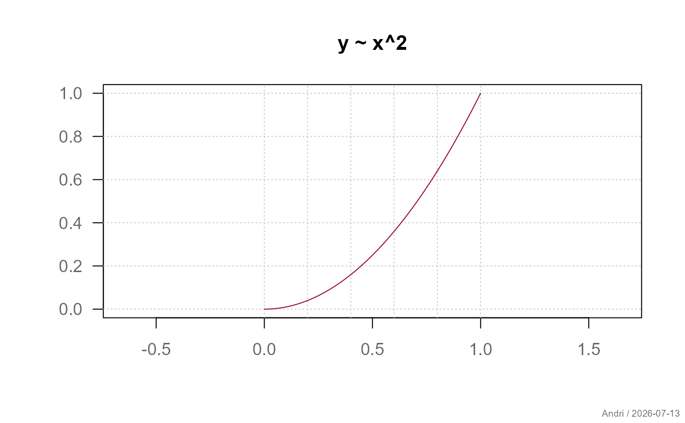
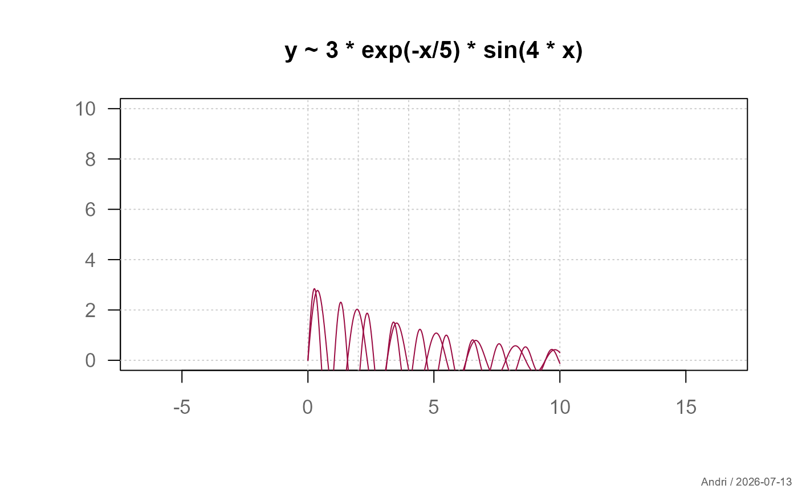
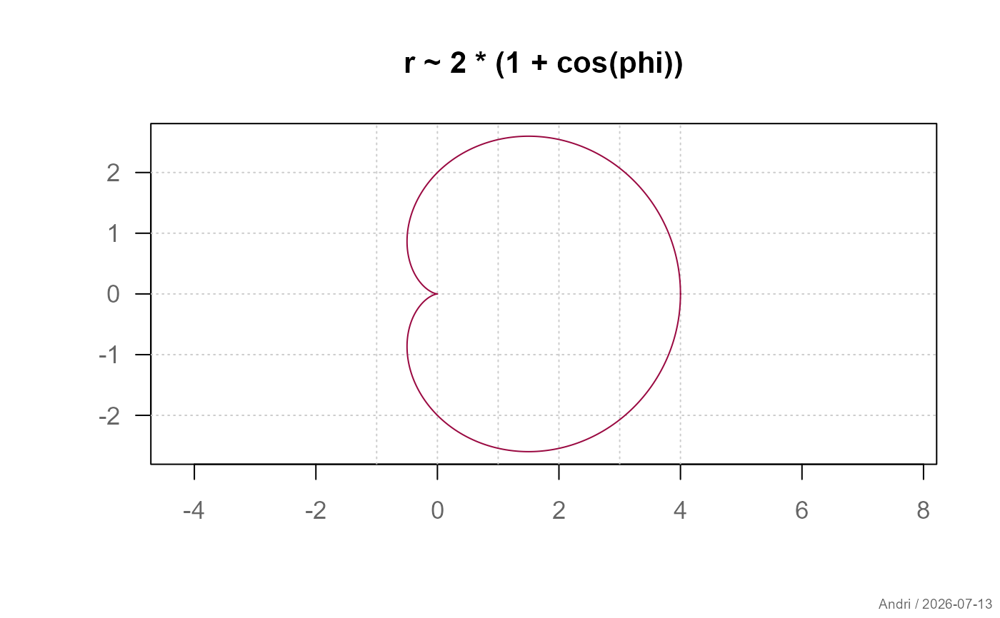
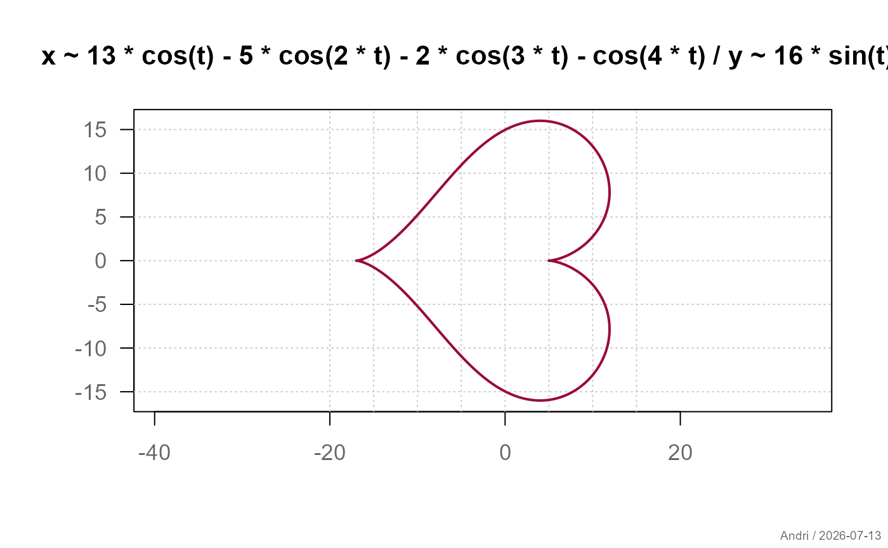
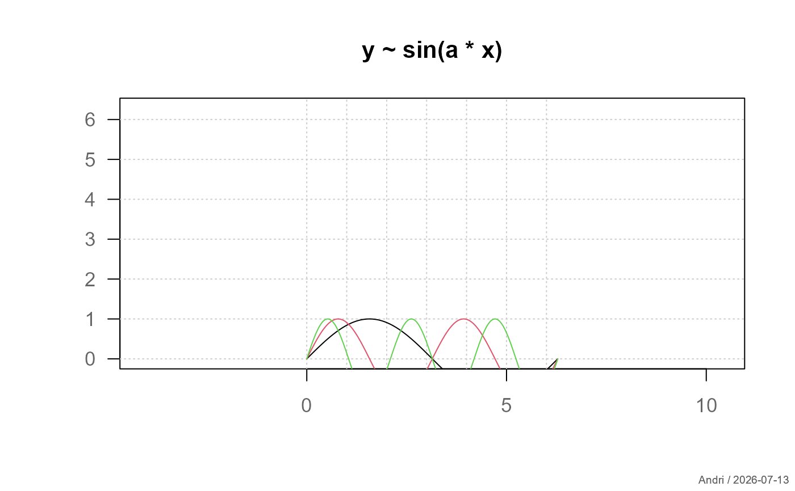

Flexible plotting of mathematical functions in Cartesian, polar, and parametric form.
Usage
plotFun(
expr,
main = NULL,
xlab = "",
ylab = "",
xlim = NULL,
ylim = NULL,
from = 0,
to = 1,
n = 500,
args = NULL,
add = FALSE,
col = .useTheme,
lwd = 1,
lty = 1,
grid = .useTheme,
stamp = .useTheme,
...
)Arguments
- expr
expression defining the function. Either a formula (
y ~ f(x)), a polar formula (r ~ f(phi)), or a list of two formulas for parametric plots.- main
main title of the plot.
NULL(default) derives a title fromexpr."",NA, orFALSEsuppress the title and compact the top margin.- xlab, ylab
labels for the axes.
- xlim, ylim
numeric vectors of length 2 defining axis limits. For Cartesian functions,
xlimdefaults toc(from, to). For polar and parametric plots, limits are derived from the data. If onlyxlimis supplied for polar/parametric plots,ylimmirrors it (ensuresasp=1renders correctly).- from, to
numeric; lower and upper bound of the parameter domain. Default
from=0,to=1.- n
integer; number of evaluation points. Default
500.- args
named list of additional parameters fixed for the function expression (e.g.
list(a = 2)fory ~ sin(a*x)).- add
logical; if
TRUE, adds to an existing plot without redrawing axes or grid. DefaultFALSE.- col
color of the line.
.useTheme(default) resolves togetTheme()$twin[1]- the primary accent color, consistent withlines.loessandplotQQ().- lwd
line width. Default
1.- lty
line type. Default
1.- grid
controls drawing of the background grid.
.useTheme(default) follows the active theme (getTheme()$grid).TRUE/FALSE/NA, or a named list, as forgrid.- stamp
controls the corner stamp.
.useTheme(default) resolves togetTheme()$stamp.TRUE/FALSE/NULL, a string, or a named list forstamp().- ...
further graphical parameters passed to
parvia the internal framework.
Value
Invisibly returns a list with components x and y
(the plotted coordinates after finite filtering).
Details
The function automatically detects the type of input:
Cartesian:
y ~ f(x)Polar:
r ~ f(phi)orr ~ f(theta)Parametric:
list(x ~ f(t), y ~ g(t))
Additional parameters fixed for the expression can be passed via
args.
See also
Other plot.distribution:
plotProbDist(),
shade()
Examples
# Cartesian
plotFun(y ~ x^2)

# Damped oscillation - add second curve to existing plot
plotFun(y ~ 3*exp(-x/5)*sin(4*x), from = 0, to = 10)
plotFun(y ~ 3*exp(-x/5)*sin(6*x), from = 0, to = 10, add = TRUE)

# Cardioid (polar)
plotFun(r ~ 2*(1 + cos(phi)), from = 0, to = 2*pi)

# Heart curve (parametric)
plotFun(
list(
x ~ 13*cos(t) - 5*cos(2*t) - 2*cos(3*t) - cos(4*t),
y ~ 16*sin(t)^3
),
from = 0, to = 2*pi, lwd = 2
)

# Parameter sweep
for (a in 1:3)
plotFun(y ~ sin(a*x), args = list(a = a),
from = 0, to = 2*pi,
add = (a != 1), col = a)
